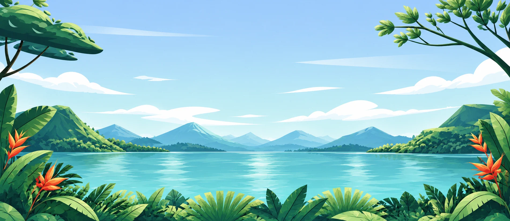
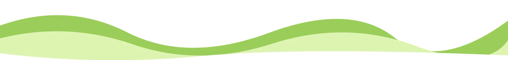
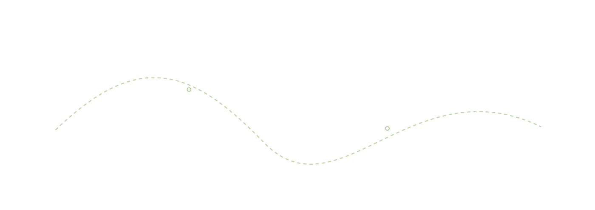

Sawah & suasana desa
Hijau yang
Hijau yang
menenangkan.
Tegallalang

Dari laut yang biru hingga udara pegunungan.
Temukan tempat untuk menikmati Bali
lebih pelan.
Tegallalang

Air terjun Bali


Kintamani

Ilustrasi panorama Bali · SAKALA
Debur ombak, hijaunya sawah, atau udara yang sejuk. Pilih jeda versimu.

 Pantai & pesisir
Pantai & pesisir
Kelingking Beach · Nusa Penida
Sawah & suasana desa
Tegallalang · Gianyar
Hutan & air terjun
Jelajah air terjun Bali
Danau & pegunungan
Kintamani · Bangli
Tak perlu terburu-buru. Temukan pengalaman yang sesuai
dengan suasana hatimu, lalu
beri waktu untuk menikmatinya.

Suasana desa
Berjalan di jalur sawah dan menikmati
suasana desa dengan lebih dekat.
Udara pegunungan
Menikmati udara sejuk dan bentang
pegunungan yang terasa lapang.
Jeda di pesisir
Memandang birunya air dan menikmati
waktu istirahat di sisi pesisir.